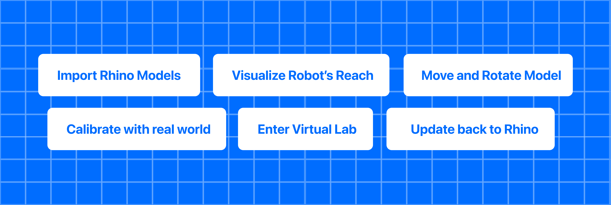

Axys Rhino Plugin
Axys is a Rhino 8 plugin that works in combination with the Axys (visionOS app) to bring your Rhino models into a spatial computing environment, seamlessly integrating them into the real world.
With Axys, you can:
- Visualize 3D models in augmented reality at full scale
- Calibrate Rhino’s coordinate system to a physical space with printable markers
- Validate a robot arm’s reach-envelope before the printing session begins
- Iterate rapidly—move or rotate objects in-headset and sync changes back to Rhino in real time
Axys is purpose-built for 3D concrete printing (3DCP) workflows, but its calibration and streaming pipeline can be adapted to any large-scale robotic fabrication setup.
Why Axys?
| Challenge | How Axys Helps |
|---|---|
| Mapping digital geometry to real space | Guided marker-based calibration aligns Rhino with the physical lab |
| Understanding robot constraints | Live AR overlay of the robot’s workspace and collision boundaries |
| Rapid design iteration | One-tap object export & real-time transform sync back to Rhino |
Feature Highlights

- Live Model Streaming — Export a Rhino object and see it in AR within seconds.
- Spatial Calibration — Printable QR-style markers + a step-by-step in-app guided setup.
- Robot Workspace Overlay — Visualize reach limits and keep prints in-range.
- Virtual Space View — Load a 1 : 1 model of your space to see it in AR.
- Real-Time Transform Sync — Move / rotate in AR, Rhino updates instantly.
Non-transform edits (e.g. materials) do not stream live—re-export to refresh.
Requirements
| Component | Minimum Version | Notes |
|---|---|---|
| visionOS device | 1.0 | Usage of simulator is not recommanded for this product |
| Xcode | 16 | Run and build the app |
| Rhino | 8 | Install the Axys Rhino Plugin |
| Network | — | visionOS device and workstation on the same local network |
Quick-Start
Clone & open
git clone https://github.com/Apollo-ARTE/Axys-RhinoPlugin.git
Build & run
- Open the project in Visual Studio or a compatible IDE.
- Navigate to the Play (or Run) section.
- Click Run and Debug to start the project.
- In Rhino, run Axys Start. Note the IP address shown in the console.
- Launch Axys on the headset and connect entering that IP.
- Select a Rhino object and tap Import in Axys—the model appears in AR.
- Follow the calibration setup.
- Click Visualize to enter the visualization mode.
For step-by-step instructions on connecting, calibrating, and manipulating models, see the complete article.